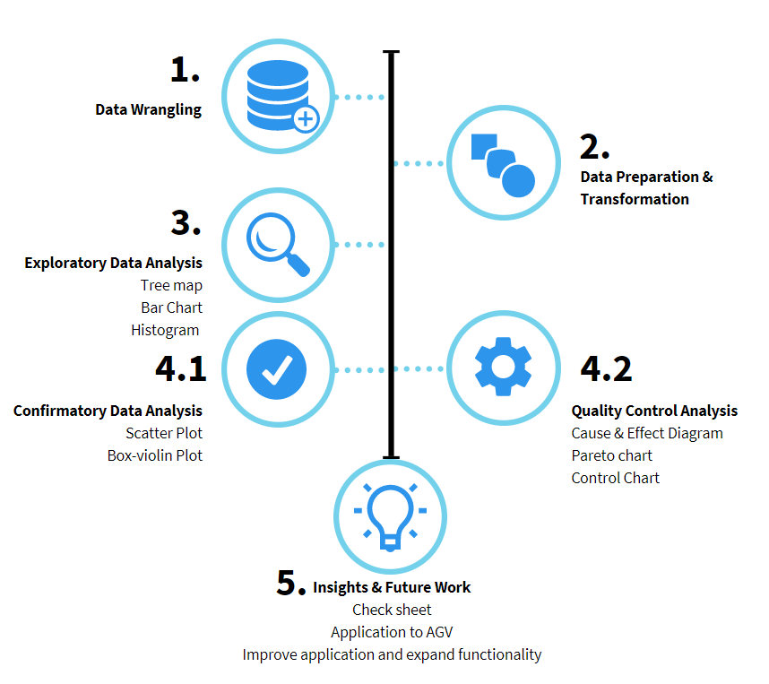
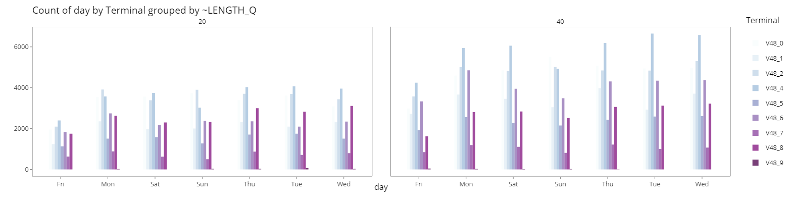
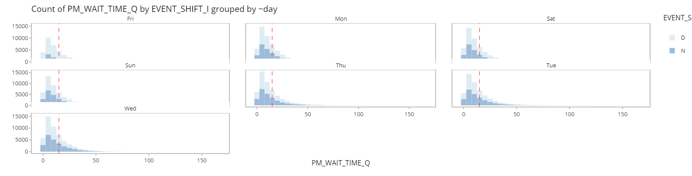
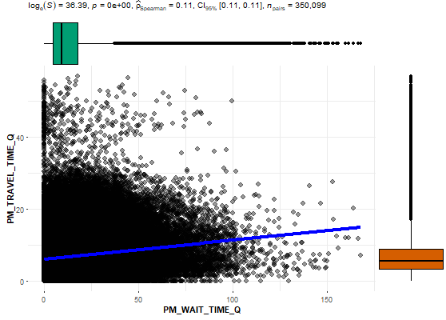
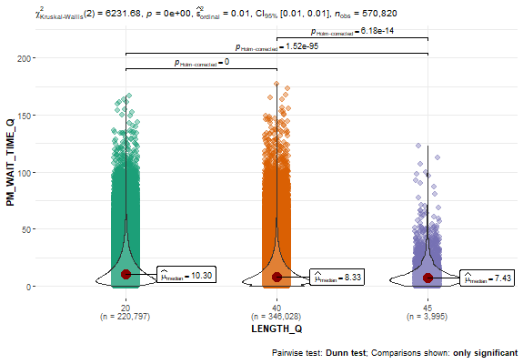
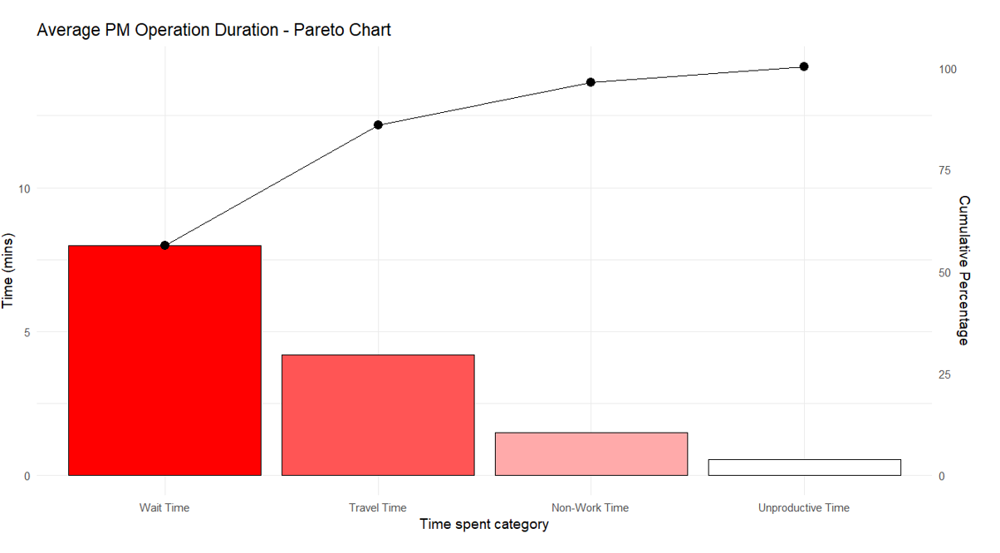
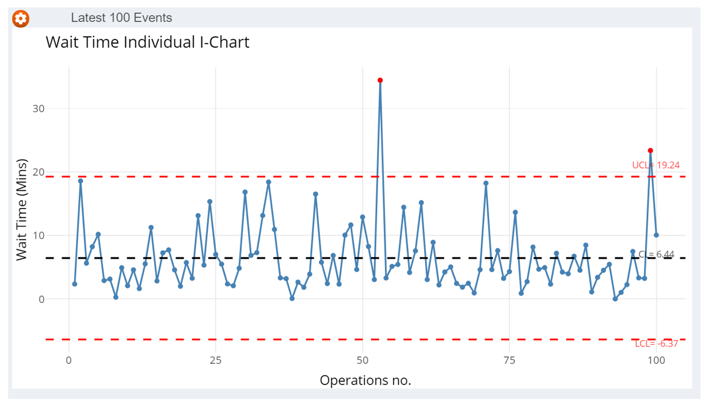

Understanding Prime Mover Productivity in Yard (UPMPY)
Li Zhenglong, Lim Kai Chin

Introduction
Maritime trade is the backbone of international trade. Today, maritime trade accounts for approximately 92% of world trade. PSA Singapore handles about a fifth of the world’s transhipped containers.In 2021, PSA Singapore handled a total 36.9 million twenty-foot equivalent units, with more than 90k PM yard operations daily. With the amount of transactions, even a slight improvement in productivity can bring about large savings.
Containers are discharged from and loaded onto a vessel once berthed. A typical discharging operation starts with a quay crane picking up a container from the vessel, placing it onto a prime mover (PM), which then transports it to a storage yard. At the yard, a yard crane picks up the container from the PM stores it at a designated spot. Loading operations involve the transporting of containers in the opposite direction.
Motivation and Objectives
Motivated by the general lack of effective and easy to use web-enabled data visualization tool to conduct data analysis on PM operation data.
To enable operation managers the ability to monitor,drill down and identify key attributes and continuous improvement to processes contributing to the PM productivity.
Design Principles
Data visualizations are synchronized through a set of common data filters that allows manipulation and coordination of interaction between the different views.
This allows analysis to be conducted starting from overview, zoom and filter into details, bouncing back and forth, with ease and without interrupting our train of thought.
Approach

Exploratory Data Analysis (EDA)

Interactive bar chart allows changing of chart components, main x-axis variable, colour fill variable, and its grouping facet. This interactive chart enables managers to discover new insights through reactive visualisations of existing data that allows them to compare visually differences between categories..

Interactive histogram helps display of distributions for PM Wait time and Travel time. Additional reference lines built into the chart enable managers to set thresholds and identify outliers or other areas of concern derived from the continuous variables.
Confirmatory Data Analysis (CDA)

Scatter plot allows for exploring correlations between PM Wait Time and Travel Time, helping to identify mutual impacts on each other. These continuous variables can also be compared using different categories, delivering greater insight.

Box-violin plot showcases and compares data distribution between variables, helping to identify key differences between the multiple variables within the dataset through statistical testing. The aggregated data can be faceted by different categories, helping users to identify differences across multiple categories at once.
Quality Control Analysis
Cause and effect Diagram AKA Ishikawa/fishbone Diagram helps operation managers to identify potential factors/causes to the overall effect of low productivity visually and logically.

Pareto and Control charts are used together to help tunnel down into the operation process and to find the root cause of productivity problems. The Pareto chart helps to identify and focus effort on the top portion of the causes to resolve the key contributors of the problem.
 Using a variety type of control charts with control limits of 3 standard deviation, we can study the stability of the current process, analyze and make improvements, and monitor the results of the newly implemented process. The data obtained from the process can also be applied to predict future performances.
Using a variety type of control charts with control limits of 3 standard deviation, we can study the stability of the current process, analyze and make improvements, and monitor the results of the newly implemented process. The data obtained from the process can also be applied to predict future performances.
Future Work
- Implement check sheet to record actual causes when long waiting or traveling time event as input for process improvement.
- Extend Visual Analytic technique to future terminals’ Automate guided Vehicle(AGV) with inbuilt with IoT & GPS sensors to improve data accuracy, processes and productivity.
- Conduct workshops with key stakeholders to improve application and expand functionality
- Add data upload capability
- Introduce linear regression function with additional data from new equipment